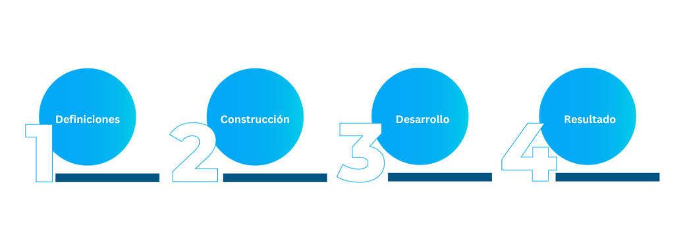

Propuesta
1. Definiciones y Fundamentación
A la hora de sentarnos a definir inicialmente los contenidos, la metodología, las formas de evaluar, como adaptar los materiales y como daríamos acompañamiento durante el proceso de los analistas teniamos claro que el desarrollo del mismo se daría y estaría fuertemente atado, dada su naturaleza de formación en línea y de caracter practico, a la construcción de aprendizaje conectivista posicionandonos como guías y facilitadores en el proceso que a su vez toma relevancia junto con el aprendizaje basado en proyectos, potenciando la experiencia en el proceso formativo, haciendo, sociabilizando y finalmente contribuyendo de manera activa y colaborativa. El acompañamiento se da de manera sincrónica y asincrónica pero es mínima la intervención por parte del tecnólogo ya que se pretende evaluar el efecto del aprendizaje auto gestionado dada las dificultades geográficas. Se dará una breve guia inicial para que conozcan lo implementado para que puedan navegar, revisar y resolver luego las actividades propuestas con la menor intervención posible.
¿Cuál es la problemática educativa?
La subutilización de recursos educativos y la falta de acompañamiento formativo sobre tecnologías, y su impacto en
el proceso de formación inicial y onboarding del equipo de soporte de VU-Security, distribuido geográficamente, sobre tecnologías Linux y Tomcat.
¿Cuál es la práctica en Tecnología Educativa?
La práctica aborda la implementación de un EVA y la producción de material educativo para el soporte de tecnologías Linux en la etapa del onboarding.
¿Cuál es el sentido pedagógico del proyecto?.
El sentido pedagógico del proyecto es acompañar y optimizar la experiencia de formación inicial del personal que se encuentra
en proceso de onboarding, mediante la implementación de un EVA que permita realizar un itinerario de capacitación inicial sobre
tecnologías Linux. Además este integrará los recursos ya existentes de la empresa (no aprovechados) como así también con nuevos
contenidos generados por nuestro equipo. Esto permitirá optimizar la experiencia de formación en el horario adecuado para cada empleado.
¿Qué elementos del proyecto son distintivos del ejercicio profesional de un Licenciado en Tecnología Educativa?
Los elementos distintivos en este proyecto son diseño, planificación e implementación de proyectos de tecnología educativa en
instituciones del sistema socio productivo. Elaboración de un EVA (situado u ubicuo) (previamente hecho un relevamiento y diagnóstico).
Planificación, gestión del proyecto, recuperar material formativo que ya existe, producción y adecuación de material, la implementación y evaluación del impacto formativo.
¿Qué recursos tecnológicos son utilizados en el proyecto y las prácticas?
Para la organización externa del grupo las herramientas utilizadas para llevar a cabo esta práctica son: Google Docs, Drive, Sheets,
Meet, Calendar, Photopea, Canvas, HTML5UP, Github, notepad++, Whatsapp
Para dentro de la empresa las herramientas utilizadas son: Microsoft Teams, Microsoft Outlook, Wiki.js, Microsoft Yammer, Azure Virtual Machine, Ubuntu Linux, Tomcat.
2. Construcción
La construcción de la práctica una vez resuelta las definiciones y teniendo la factibilidad ok por parte de la empresa comenzó rápidamente a crecer en cuanto a tópicos, estructura y variables posibles de aplicar. Conocemos bien la problemática es un punto de dolor confirmado no solo por la empresa, el área que la dirije sino también algo expresado por los analistas en varias circunstancias. En algunos intercambios entre los participantes del grupo teniamos bastante claro que dada la naturaleza específica y tecnica del material instruccional nos iba a llevar bastante tiempo el mismo. Mas teniendo en cuenta que el acompañamiento sería asincrónico con quienes estuvieran en husos horarios con 12 hs de diferencia y sincrónicos con quienes estuvieran en husos horarios comunes de América.
El contenido
Con respecto al contenido que daba pié a las actividades y al diseño de las mismas, teníamos claro que el uso de laboratorios para experimentar de manera práctica sobre la manipulacion de ambientes similares a los que se encontrarán en los incidentes de seguridad de los clientes, ayudaría a desarrollar su capacidad y su confianza y también a mejorar el tiempo de respuesta ante problemas críticos. Una de las frases que más repite el líder técnico del área que forma parte de nuestro recorte y unidad de acción, Carlos, es que "todo analista y profesional técnico, aprende haciendo, rompiendo, encontrandose con problemas y practicando o buscando información cada vez que se encuentran con un desafío o una tareá técnica, donde deban utilizar sus propios accesos a los laboratorio o sistemas de los clientes. Lo que aprende haciendo un analista en un laboratorio no se lo olvida mas, y si le toca hacerlo en "caliente" en un incidente, queda grabado a fuego. Pero siempre lo ideal es que el analista lo haya prácticado antes para no ponerse nervioso al momento de realizar esas tareas"
¿En que pensamos cuando lo diseñamos?
Es basandonos en material y bibliografía revisada que damos fe de que el proceso logra ser enriquecedor y efectivo cuando se ponen en juego las emociones, la práctica y el verdadero interes por parte de quien pasa por estas formaciones.
¿con qué nos encontramos y que utilizamos?
Si bien nos encontramos con algunos contratiempos técnicos para implementar un LMS (Moodle o Classroom habían sido los propuestos) como parte del EVA para ordenar el material instruccional de la formación de la práctica, logramos recurrir a las herramientas ya instaladas en la empresa.
En la reunión mantenida con el personal que define que tecnología puede utilizarse nos comentó que contaban con algunas herramientas de trabajo colaborativo activos y una wiki interna. Teniendo en cuenta el potencial que psoeen las wikis y siendo conocidas por ser bloques importantes en piezas de un EVA revisamos y vimos que podría adaptarse el material con algo de ajuste.
Logramos, con la documentación y algunos tips del administrador de la wiki, encontrar la forma de ordenar el material instruciconal y hacerlo ver incluso similar a uno creado en un LMS con sus módulos, cuadros y el material autocontenido y navegable en orden para que sea mas amigable y familiar para los analistas.
La segunda herramienta seleccionada para la construccion de las actividades fue Yammer, que es como una red social similar a facebook y twitter pero interna que se utiliza en la empresa para compartir contenido, preguntas y resolver problemas de manera colaborativa.
¿Qué forma tomó?
Aprovechando la familiaridad de los analistas con esta herramienta, revisamos y decidimos diseñar las actividades como si fueran pequeños desafíos individuales en cada post. Al ir a la página donde se encuentran las actividades pueden ir navegando una por una y realizando los desafíos o respondiendo las preguntas propuestas alli.
Fueron diseñadas para que desde allí se dirijan a los laboratorios prácticos que dispuso la empresa para que puedan realizar las actividades propuestas.
Se armó un laboratorio de Linux y tomcat, armando carpetas, instalando aplicaciones y servicios con archivos de distinto tipo separados por carpetas con los apellidos de cada analista. Cada uno de ellos contaba con la misma cantidad de recursos para poder practicar de manera real en un ambiente homólogo a los que se encuentran en su dia a día pero bajo un ambiente controlado, donde no podían incurrir en molestias o problemas a terceros.
Una vez finalizado el material instruccional y las actividades estaban listas para ser resueltas junto con laboratorios se dió inicio a la etapa de revision por parte del líder técnico quien , en poco tiempo nos dió la venia del mismo para ser entregada a los analistas.
¿Cómo quedó el material instruccional y el espacio de actividades?
3. Desarrollo
¡Arrancamos!
Recordando que el proceso de formación de este ciclo propuesto es para que pueda ser realizado de manera auto-gestionable (dada la diferencia geográfica) con la menor intervención posible por parte de los tecnólogos.
Al principio, para poder introducirlos en la temática y darles contexto sobre lo que estaban recibiendo y lo que podian encontrar, los invitamos a una pequeña reunion y les dejamos unos tips para comenzar a navegar el material. así podían estar familiarizados con donde estaba el material, su estructura y las actividades.Primeros eventos
Rapidamente ambos analistas fueron a revisar la documentación y a ver los tópicos para ver si tenian accesos y habian captado bien los lineamientos iniciales. Las primeras preguntas que surgieron fueron de limitaciones en resolver sus ejercicios. "¿Podemos usar documentación extra o solo la propuesta?" o "Hay que grabar El laboratorio, se elimina? o podemos trabajar tranquilos?". Comentamos que podían usar como guía el material propuesto y complementar con todo recurso que creyeran de confianza para resolver los ejercicios. Y en cuanto a los laboratorios les comentamos que podian utilizarlos sin problemas. Ésta consulta surge a pertir de la costumbre de los laboratorios en otros formatos de formación donde los laboratorios prácticos tienen un tiempo limitado de vida.
Uno de los analistas comenzó a navegar por la documentación y al dia siguiente comenzamos a recibir las notificaciones de algunas actividades resueltas por este primer analista. Comenzamos a revisar y habian comenzado con los ejercicios que mas carga de tiempo llevaban en el laboratorio. El segundo analistas, a 12 horas de diferencia con nosotros nos encontró con mensajes al otro día donde nos invitaba a debatir si los ejercicios no solo podian ser resueltos y mezclados, sino que acordó y agendó una reunión para debatir los resultados.
¡La reunión surgida por parte de ellos!
Uno de los analistas, tras terminar de navegar la documentación y los ejercicios propuso rapidamente un encuentro sincrónico en un horario que mas o menos
pudieran asistir todos sin mucha dificultad.
En dicha reunión se comenzó a repasar actividad por actividad y a debatir sobre que habian utilizado y por que de cada solución.
Si bien la propuesta es para que cualquiera pueda realizar estas actividades de manera individual, el espacio en la Wiki y en Yammer tiene ésta posibilidad para compartir de manera
grupal e intercambiar opiniones y propuestas de resolucion.
Lo que no esperabamos es que tomaran la iniciativa de manera tan a conciencia. Derivó en algunas discusiones graciosas sobre que o quien habia resuelto mejor con sus fundamentos
haciendo referenia al material isntruccional diseñado, pero con grandes resultados.
En algunos puntos hubo acuerdos y en otros no, pero todas las respuestas que dieron y dejaron en las actividades eran correctas.
4. Resultados
El resultado de la práctica, si bien no sucedió en su totalidad en el tiempo planificado dados los contratiempos técnicos y por el tiempo que nos llevó el material instruccional, encontramos que fue positivo (en general) por varias razones:
- 1. Logramos adaptar la propuesta con los recursos disponibles. - 2. Logramos realizar un acompañamiento pedagógico tanto sincronico como asincrónico a través de distintos canales de comunicación. - 3. Logramos despertar interes por la propuesta y la temática. - 4. Encontramos, sin esperarlo, una dinámica en que trabajaron en conjunto sin plantearselo aun con las diferencias horarias. - 5. Recibimos comentarios y recomendaciones interesantes con respecto a las actividades prácticas. - 6. Recibimos solicitudes de ampliar los temas abordados identificando que hay otros tópicos de interes y que preocupan al área. - 7. Logramos identificar realmente el tiempo que lleva el diseño instruccional de tópicos técnicos específicos para poder realizar mejores estimaciones. - 8. Logramos repartir y analizar cada uno de los integrantes, con sus experiencias, las distintas etapas del proyecto a pesar de los contratiempos.
¿Dónde logramos ver evidenciado el aprendizaje en la experiencia?
Hubo varios momentos puntuales que nos dieron pautas para poder ver claramente el resultado de lo aprendido, lo adueñado y de como hacían própio lo trabajado.
1. La forma en la que abordaron el recorrido y discutieron una vez entrados en las actividades y como las resolvieron.[Link a comentarios de la evidencia]
2. Las interacciones y el resultado de las actividades en Yammer [Link a las evidencias de Yammer]
3. La auto-organización para el trabajo colaborativo y la resolución de las actividades
4. Los comentarios que nos dejaron en las encuestas. [Link comentarios encuestas]
HAY QUE AGREGAR ALGO AL RESPECTO DE LAS DEVOLUCIONES A LOS ANALISTAS
Los invitamos a ver alguna de todas esas piezas de manera gráfica!